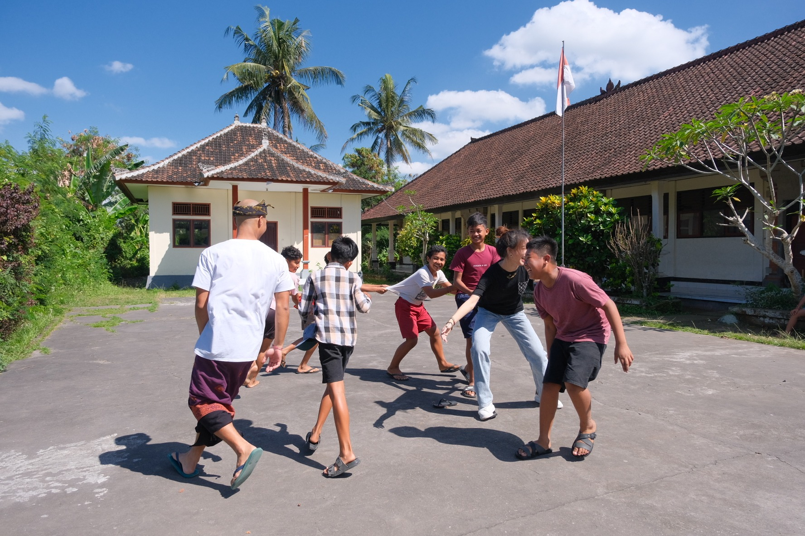
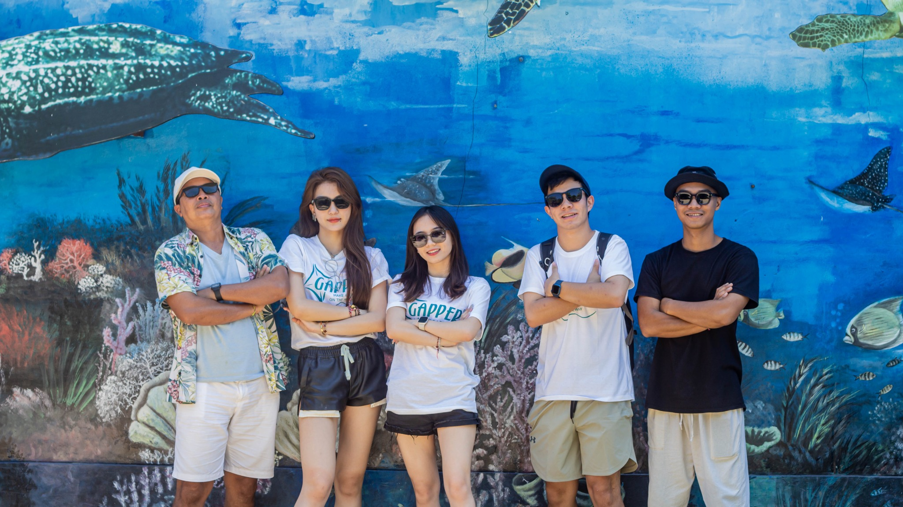
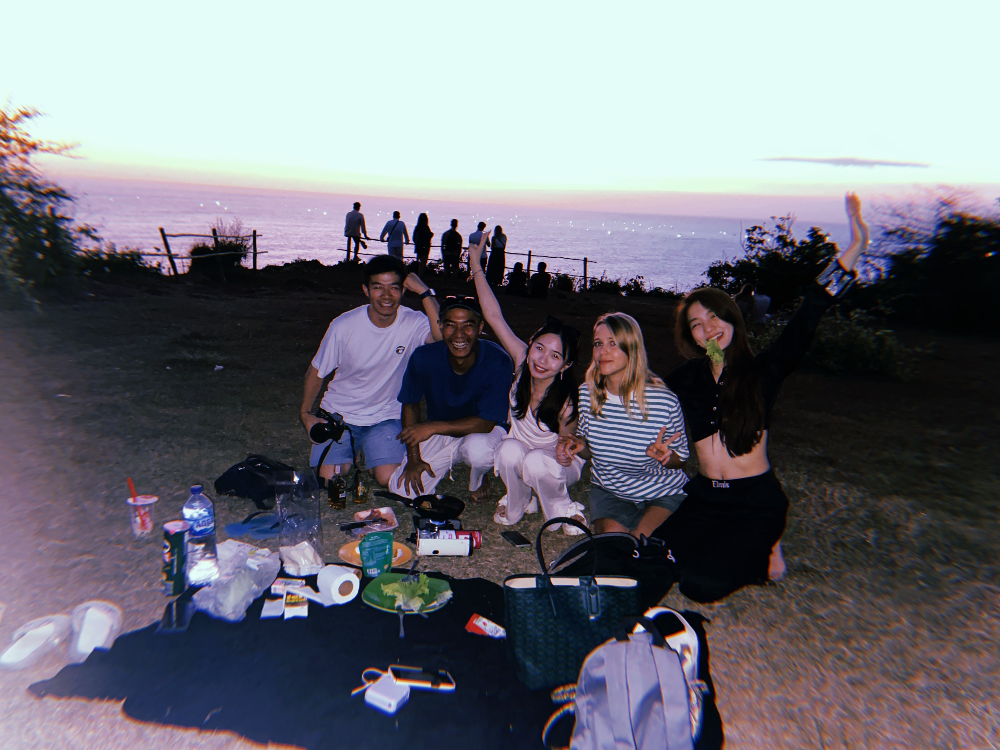
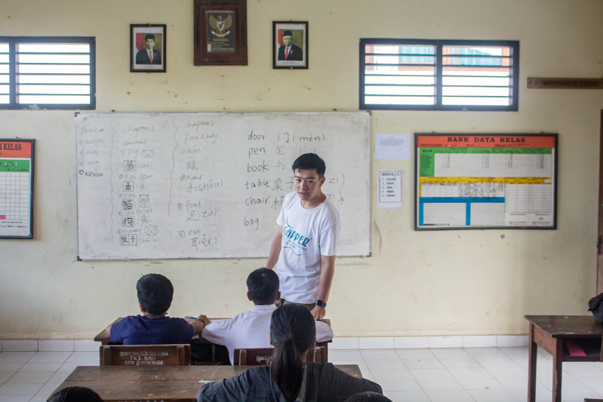
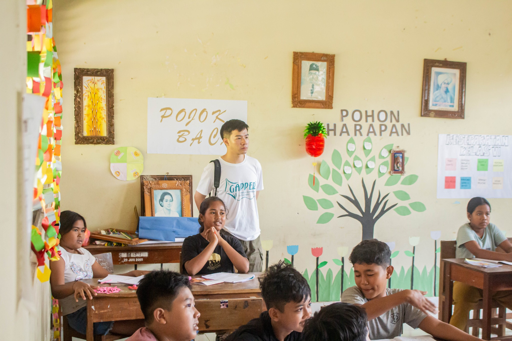
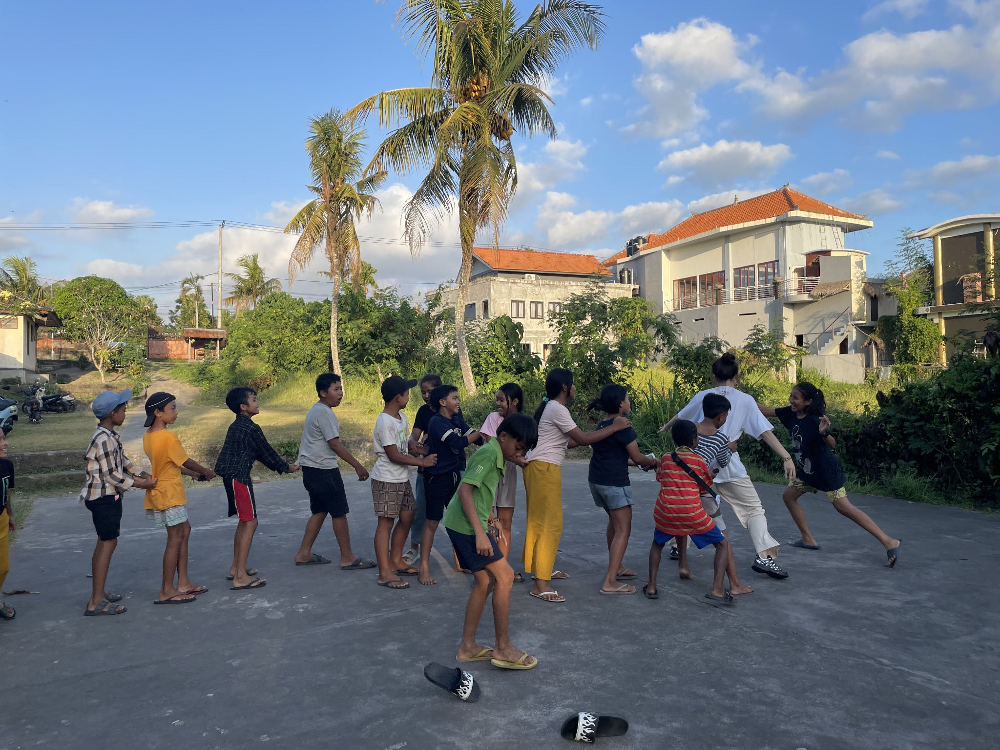
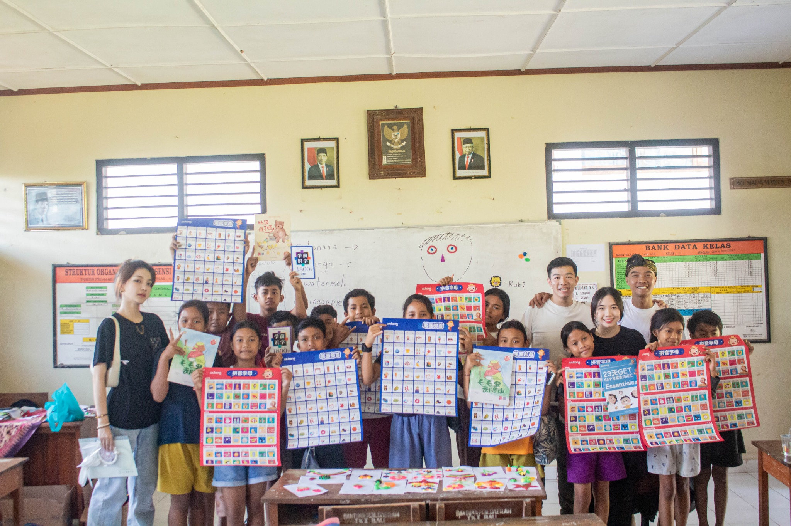
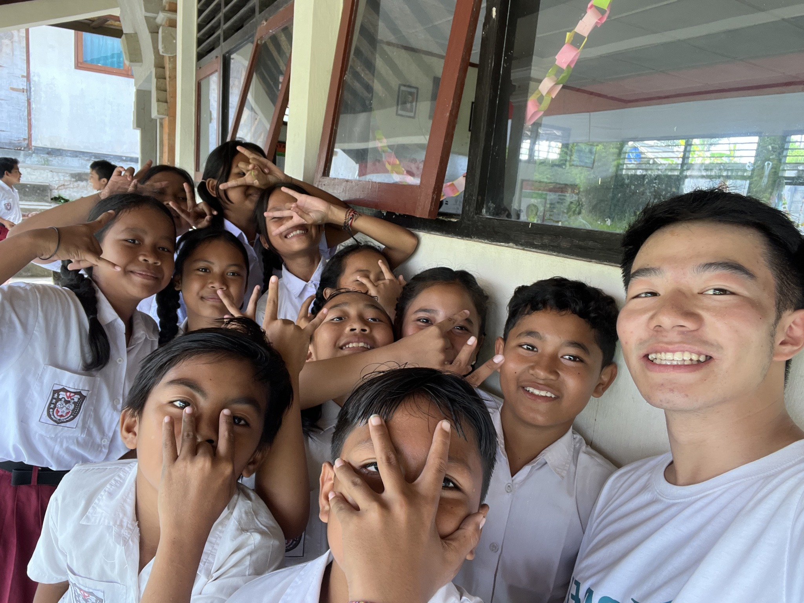
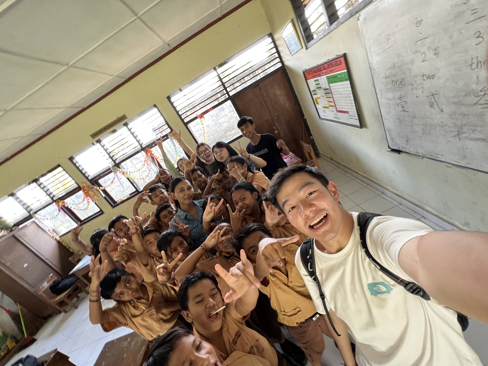
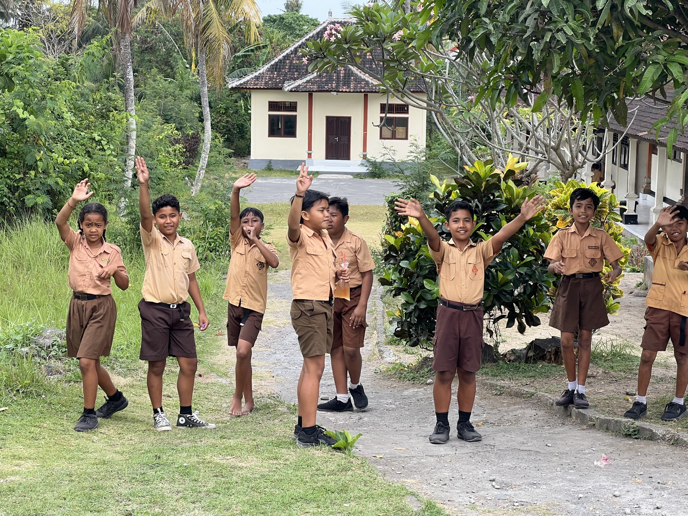

Assisted with orientation, onboarding, and everyday coordination for international volunteers.

Supporting people, sharing languages, and telling stories through photographs.
My time volunteering in Bali combined behind-the-scenes coordination with hands-on teaching and photography.
At the Indonesia office, I helped international volunteers navigate orientation and daily coordination as they settled into a new environment. In local elementary schools, I supported language learning through basic Chinese and English lessons, games, and classroom activities. I also used photography to document the people and moments that made this work meaningful.
Role focus: Volunteer support · Cross-cultural communication · Community engagement · Photo documentation
Assisted with orientation, onboarding, and everyday coordination for international volunteers.
Brought introductory Chinese and English into local elementary school classrooms through interactive activities.
Captured learning activities and candid moments to tell a human-centered story of the experience.
Indonesia office · Onboarding and day-to-day support

Learning across cultures
Building community beyond the dayLocal elementary schools · Basic Chinese and English

Language learning in action
A classroom in Bali
Learning through participation
Learning through connection
Relationships beyond lessons
A classroom full of energy
Alongside teaching and volunteer support, I photographed classroom activities and everyday interactions. My aim was simple: to preserve the real people, learning, and connections behind the experience.
Photography helped me pay attention to the details — a shared laugh, a curious question, a spontaneous moment after class — and tell the story with care.
Working with international volunteers, students, and teachers reminded me that meaningful connections are built through patience, curiosity, and genuine attention to others. These are the values I continue to bring to communication and storytelling work.
A selected experience in volunteer coordination, education, and visual storytelling.